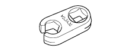

КИНЕТИЧЕСКАЯ ДИНАМИЧЕСКАЯ СИСТЕМА ПОДВЕСКИ > СИСТЕМА ДИАГНОСТИКИ > Подготовка

| Динамометрический ключ |
|  | 09017-1C130 | Разрезная головка 17 мм | - |
 | 09050-00032 | Пневматическое сверло | - |
| Параметр / Устройство | Объем | Классификация |
| Жидкость подвески | - | Жидкость для подвески AHC |